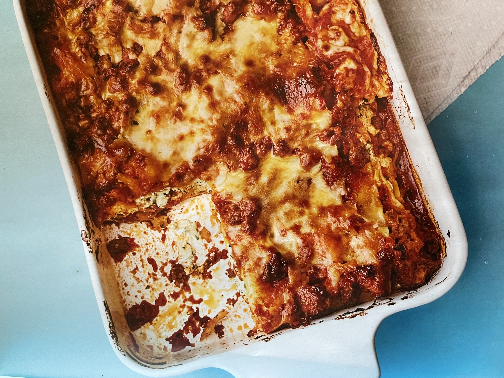

Baby's First Lasagna

Description
Baby's First Lasagna is gooey, delicious, and--most importantly--easy to make. Perfect for entertaining groups, or for when you want leftovers for a while.
Ingredients
- 2 teaspoons olive oil
- 4 oz ground beef
- 4 ounces spicy Italian sausage (1 link), removed from the casing
- 1 32 oz jar Italian tomato sauce
- Kosher salt and freshly ground black pepper
- 16 oz ricotta cheese
- 1/2 cup grated Parmesan cheese
- 1/3 cup fresh flat-leaf parsley leaves, chopped (optional)
- 1 large egg, lightly beaten
- 12 no-boil lasagna noodles
- 16 oz shredded mozzarella cheese
Steps
- Preheat the oven to 375°F.
- Heat the olive oil in a large pot over medium-high heat. Add the beef and sausage and cook, stirring with a spoon to break up the meat, until browned, about 4 minutes. Add the tomato sauce, bring to a boil, and reduce the heat to medium. Simmer, uncovered, until the sauce has thickened, about 10 minutes. Tsaste and season with salt and pepper.
- Combine the ricotta, parmesan cheese, parsley, if you like, and egg in a bowl and season with salt and pepper.
- Spread 3/4 cup of the meat sauce over the bottom of a 9 by 13-inch baking dish. Arrange 4 noodles on top of the sauce and top with half the ricotta mixture, 3/4 cup of meat sauce, and 2/3 cup of the mozzarella. Repeat this layering once. Finisht he lasagna with the last 4 noodles and the remaining meat sauce. Sprinkle the remaining mozzarella over the top.
- Bake until bubbling, about 30 minutes. Let the lasagna sit for 15 minutes before slicing and serving.
Home